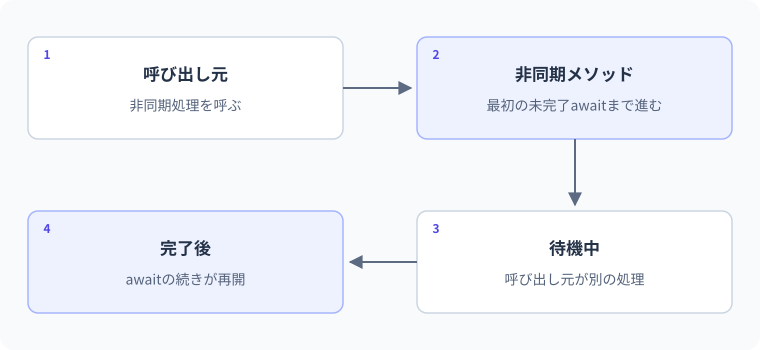

asyncとawait
開始・待機・再開の順序。
読み込みが終わる前と後で、実行できる行が変わります。一つの非同期処理を使い、呼び出した直後に得るTaskと、await後に得る結果を分けて追います。
要点
string result = await LoadMessageAsync();開始した処理と完了後の結果
asyncは自動的に別スレッドを作る指定ではなく、awaitは単に処理を遅くする記号でもありません。Taskが表すもの、呼び出しの開始、未完了の待機、例外を受け取る位置を一つずつ追います。
Taskは将来の完了を表す
Taskは処理の完了、Task<T>は完了と結果Tを表します。asyncメソッドではawaitを使い、完了後に続きの処理を書けます。未完了の処理をawaitすると、そのメソッドは呼び出し元へ制御を戻せます。すでに完了している場合は続きへ進むため、awaitが必ず一時停止するとは限りません。
Taskは完了を表す。スレッドそのものではない
Taskは成功・失敗・キャンセルを含む処理の完了を表します。Task<int>なら成功したときにintの結果を得ます。メソッド名のAsyncは命名慣習であり、その文字だけで動作が変わるわけではありません。asyncを付けたメソッドでも、呼び出すと最初から別スレッドへ移動するわけではありません。
メソッドの本体は呼び出し時に始まり、未完了のawaitへ到達すると、続きの処理を後へ回して呼び出し側へ戻れるようになります。await対象がすでに完了していれば、その場で続行する場合があります。Taskを持つこととOSスレッドを一つ占有することを同じ図で説明しないでください。
非同期メソッドの呼び出し直後と、awaitした後では受け取るものが違います。
Task<string>処理の完了を表すもの
string成功して完了した処理の結果
Taskは処理の完了・結果・失敗を表します。Taskの参照を変数へ保存しただけで、文字列の結果を取得したことにはなりません。
awaitは結果の取得と例外の受け取り位置
int score=await GetScoreAsync()は、完了後の結果をintとして受け取ります。待つ間に呼び出しスレッドを同期的にブロックするWaitやResultとは異なります。非同期メソッドが失敗すれば、awaitした場所で例外を受け取ってtry/catchで扱えます。
Taskを返したのに呼び出し側で待たず放置すると、完了や失敗を追えなくなる場合があります。特に保存や送信を始めてすぐアプリを終了すると、処理が最後まで終わる保証がありません。処理の所有者を決め、その所有者が完了と失敗を観測することが基本です。
Taskとして失敗が記録された非同期処理をawaitする場面です。
- 呼び出し側非同期処理
- 非同期処理呼び出し側
- 呼び出し側呼び出し側
呼び出し側は、awaitを含む範囲をtry/catchで囲んで失敗を扱います。結果を使いたい処理では、Taskを受け取るだけで放置しないようにします。
一つの処理をawaitして結果を読む
Console.WriteLine("開始");
string result = await LoadMessageAsync();
Console.WriteLine(result);
Console.WriteLine("完了");
static async Task<string> LoadMessageAsync()
{
await Task.Delay(30); // 待ち時間を学習用に再現する。
return "読み込み結果";
}LoadAsyncの結果がまだない場合を描いています。Task.Delayはここでは待ち時間を作るための例です。
| 処理 / 時間 → | ① 開始 | ② 待機中 | ③ 完了 | ④ 再開 |
|---|---|---|---|---|
| 呼び出し側 | 「開始」を表示して呼ぶ | awaitの後にはまだ進まない | 結果を受け取れる状態 | 結果 →「完了」を表示 |
| LoadAsync | Delayを開始する | Delayの完了を待つ | 文字列を返す | 呼び出し側へ結果が伝わる |
awaitの後の行は、対象の処理が完了してから続きます。必ず新しいスレッドが作られる、または常に一度停止する、という意味ではありません。
想定出力
処理順
- 開始を表示し、Task<string>を返す処理を呼ぶ。
- 未完了の待機をawaitし、完了後に文字列を受け取る。
- 結果、完了の順に表示する。処理順は読みやすく保てる。
明示的な合図でawait前後の順番を追う
var gate = new TaskCompletionSource<bool>(TaskCreationOptions.RunContinuationsAsynchronously);
Console.WriteLine("1: 呼び出し前");
Task<int> task = LoadAsync(gate.Task);
Console.WriteLine($"3: 完了済み={task.IsCompleted}");
gate.SetResult(true);
int value = await task;
Console.WriteLine($"5: 結果={value}");
static async Task<int> LoadAsync(Task signal)
{
Console.WriteLine("2: await前");
await signal;
Console.WriteLine("4: await後");
return 80;
}出力
| 段階 | 値・状態 | 読み解き |
|---|---|---|
| 呼び出し | LoadAsyncの本体が始まる | await前の2を表示 |
| 未完了のsignal | LoadAsyncは途中で呼び出し側へ戻る | taskは未完了 |
| 呼び出し側 | 3を表示して合図を完了 | この例は待ち時間の長さに依存しない |
| 続き | 4を表示して80を返す | Task<int>が成功完了 |
| await task | 80を取得して5を表示 | 結果の利用は完了後 |
実例：データ取得の完了を待つ
Task.Delayで待ち時間を表現します。実際のネットワーク通信は行いません。
Console.WriteLine("開始");
string result = await LoadAsync();
Console.WriteLine(result);
Console.WriteLine("終了");
static async Task<string> LoadAsync()
{
await Task.Delay(20);
return "取得完了";
}このコードの図解：開始・待機・再開の順序

想定出力
開始
取得完了
終了処理と値の変化
- LoadAsync完了を表すTask<string>を返す
- await結果が利用可能になるまで、後続の表示へ進まない
- 再開後取得完了、終了の順に表示する
Task.Delayのミリ秒数は正確な実測時間を保証しません。待機の意味と結果の順番を確かめる例です。
待機・スレッド・例外を混同しない
asyncは別スレッドを作る命令ではない
ファイルやHTTPのI/O待ちを非同期APIで待つと、待つためだけにスレッドを占有し続ける必要がありません。一方、重いCPU計算をasyncと付けるだけで速くすることはできません。CPU処理の別スレッド実行を検討するときはTask.Runなどが関係しますが、Webアプリで無条件に使う設計は避けます。
呼び出し側もawaitする
非同期処理の結果を.Resultや.Wait()で同期的に待つと、スレッドを塞ぎ、実行環境によってはデッドロックなどの問題につながります。非同期を呼び出し側までつなぎます。async voidは通常の業務メソッドではなく、主にイベントハンドラーなど戻り値制約のある場所で使います。
I/O待機とCPU計算を区別する
HTTPやファイルの非同期APIでは、外部の処理を待つ間にスレッドをブロックしないことが主な目的です。すでに非同期APIがある操作を毎回Task.Runで包む必要は通常ありません。awaitしても計算そのものが速くなるわけではありません。
重いCPU計算をUIスレッドから逃がす用途ではTask.Runが候補になりますが、サーバーの要求処理で何でもTask.Runへ投げれば処理能力が増えるわけではありません。まず何を待っているのか、どこでCPUを使うのかを特定します。非同期・並行・並列は関係しますが別の性質です。
async voidと呼び出し連鎖
結果のない非同期メソッドも、通常はTaskを返します。async voidは呼び出し側がTaskを受け取れず、完了の待機や例外の観測を通常の方法で行えません。イベントハンドラーなどvoidが要求される特別な境界を除き、業務処理ではTaskを選びます。
下位メソッドが非同期なら、それを呼ぶ上位もawaitしてTaskを返す形を連鎖させます。途中で.Resultや.Waitへ戻すと、応答性の低下や環境によってはデッドロックの原因になります。ConfigureAwait(false)は特定のライブラリ実装で検討するものですが、ブロックする設計を万能に修正する記号として付けないでください。
C#仕様の整理
| 観点 | C#での扱い | 読み方・設計上の要点 |
|---|---|---|
| 完了を表す型 | Task/Task<T> | Taskをスレッドそのものと考えない |
| 結果の取得 | awaitで完了後に続行 | 同期ブロックとの違いを確認 |
| 例外 | awaitの地点で例外を受け取る | 呼び出しただけで放置しない |
| 戻り値なし | 通常はTask。async voidは限定 | 呼び出し元が完了を管理できる形にする |
よくある間違いと修正
呼び出し元が完了を待てないasync void
修正箇所: 業務メソッドの戻り値と呼び出し箇所
修正前
SaveAsync();
Console.WriteLine("完了したつもり");
static async void SaveAsync() { await Task.Delay(10); }修正後
await SaveAsync();
Console.WriteLine("保存完了");
static async Task SaveAsync()
{
await Task.Delay(10);
}修正後の確認
- 表示は待機後
- 例外を投げればawait側へ伝わる
- Taskを未観測で放置しない
基礎・標準・応用演習
C#実行環境：.NET 10 SDK
基礎演習
GetScoreAsyncで短く待った後に80を返し、呼び出し側でawaitして「得点: 80」と表示してください。戻り値はTask<int>です。
開始コード
// 非同期メソッドと呼び出しを定義する。入力例・前提条件
GetScoreAsyncは短いDelayの後、80を返す。
考え方のヒント
戻り値をTask<int>とし、呼び出し側でawaitしてから文字列へ組み込む。
解答例と確認ポイント
int score = await GetScoreAsync();
Console.WriteLine($"得点: {score}");
static async Task<int> GetScoreAsync()
{
await Task.Delay(20);
return 80;
}| 解答で確認する条件 | 確認方法 |
|---|---|
| 得点: 80と表示される。 | コードと想定結果を照合 |
| ResultやWaitで同期的に待っていない。 | コードと想定結果を照合 |
処理と結果の読み解き
未完了のTask自体と結果の整数80は違う。呼び出し側が完了を待って80を受け取り、その後に得点を表示する。
よくある別解と選び方
既に結果があるならTask.FromResultで表す場合もあるが、今回は待機を含む処理の順を確認する。
よくある間違いと確認箇所
Taskをそのまま補間して結果80が表示されると考えない。必要なawaitがどの層にあるかを辿る。
実務例：API・DB取得など、処理の完了後にだけ結果を利用する契約になる。
標準：awaitで失敗を受け取る
失敗するLoadAsyncをTask<int>で実装し、awaitする側でInvalidOperationExceptionを捕捉して表示します。
- 例外をTaskの中で失敗として保持する
- 呼び出しだけでなくawaitをtryの中へ入れる
- catch後に正常な得点へ偽装しない
開始コード
// 標準：awaitで失敗を受け取る
// 課題とテストケースを読んで、自分で実装してください。
入力例・前提条件
LoadAsyncがInvalidOperationExceptionで失敗する。
考え方のヒント
呼び出しとawaitをtryの中へ置き、その型をcatchする。
解答例と確認ポイント
try
{
int score = await LoadAsync();
Console.WriteLine(score);
}
catch (InvalidOperationException ex)
{
Console.WriteLine($"取得失敗: {ex.Message}");
}
static async Task<int> LoadAsync()
{
await Task.Yield();
throw new InvalidOperationException("データなし");
}想定出力
- Task.Yieldは継続を後へ回す教材上の例であり、通常のI/Oの代用品として本番へ入れるものではない。
- 失敗はawaitの場所で受け取るため、呼び出し側が表示方針を決められる。
- 例外を0点へ置き換えないことで、取得失敗と実際の0点を区別する。
| 入力 / 条件 | 期待結果 |
|---|---|
| 失敗する処理 | 取得失敗と表示 |
| return 80へ変更 | 80 |
| 失敗をcatchしない | 呼び出し側へ例外が伝播 |
処理と結果の読み解き
Taskに記録された失敗をawaitで受け取り、catchの表示へ進む。呼び出しただけで完了まで正常だったと判断しない。
よくある別解と選び方
回復できなければ上位へそのまま伝える設計もある。捕捉する層は利用者への案内や再入力などの責任に合わせる。
よくある間違いと確認箇所
awaitせずにTaskだけ取得したtry/catchで、後の非同期失敗を全て扱えると思わない。
実務例：非同期でも例外の責任範囲を明確にし、放置したTaskを作らない。
応用：非同期処理の結果を合成する
LoadPriceAsyncが100を返し、その結果に10を加えるGetTotalAsyncを作ってください。上位もTask<int>を返し、最後にawaitして110を表示します。
- 内側で.Resultを使わない
- 中間メソッドもasync Task<int>
- 単に返すだけならTaskを直接返す設計もある
開始コード
// 応用：非同期処理の結果を合成する
// 課題とテストケースを読んで、自分で実装してください。
入力例・前提条件
価格取得は100。合計取得では価格を待ってから10を加える。
考え方のヒント
GetTotalAsyncもTask<int>を返し、下位の結果へawaitする。
解答例と確認ポイント
Console.WriteLine(await GetTotalAsync());
static async Task<int> GetTotalAsync()
{
int price = await LoadPriceAsync();
return price + 10;
}
static Task<int> LoadPriceAsync() => Task.FromResult(100);想定出力
- Task.FromResultはすでに成功完了したTaskを返し、この例では待ち時間は発生しない。
- await対象が完了済みでも同じ構文で値を取り出せる。
- 結果を加工するGetTotalAsyncまで完了が連鎖し、最上位が最終結果を観測する。
| 入力 / 条件 | 期待結果 |
|---|---|
| 価格100 | 110 |
| 価格0 | 10 |
| 内側が失敗 | 最上位のawaitへ例外伝播 |
処理と結果の読み解き
下位が100を返すまで上位は足し算の結果を確定できない。100を受け取って110を返し、最上位がawaitで110を表示する。
よくある別解と選び方
単純に下位Taskを返せる場面もあるが、今回は完了後に10を加える処理があるので結果を受け取る必要がある。
よくある間違いと確認箇所
.Resultで同期的に待つ方法へ途中で置き換えない。非同期の契約を呼び出し側までつなげる。
実務例：外部I/Oから業務計算、画面への表示まで、完了を追える呼び出しの鎖を作る。
確認問題
理解チェックと公式資料
- Taskとスレッドを区別できる
- await前後の処理順を追える
- 例外を待機側で観測できる
- async voidを業務処理で避けられる
公式一次情報
公式資料
確認日：2026年9月14日。本文の理解を補うための資料です。学習対象は.NET 10 / C# 14です。パッチ番号は固定しません。